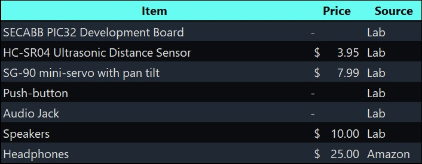

The group approves this report for inclusion on the course website.
The group approves the video for inclusion on the course YouTube channel.
- Main code file
- Github repository with complete MPLAB X project

We worked on the complete project in lab, together as a team. The website report sections were divided equally among the members. Amulya wrote the system description section and created the graphics. Aparajito worked on the introduction, results, and conclusion sections. Krithik designed the website, wrote the high-level design section, and created the hardware schematic.
- ECE 4760 Website
- Development Board Page Schematic
- PIC32 Peripheral: Time
- PIC32 Peripheral: Comparator
- PIC32 Direct Digital Synthesis
- PIC32 Sound Synthesis
- PIC32 Hardware Manual
- PIC32Peripheral Libraries
- Servo SG-90
- Ultrasonic Distance Sensor HC-SR04
- ICO/TC 173/SC 7 Assistive products for persons with impaired sensory functions
- RESNA Standards Committee on Assistive Products for Persons with Vision Impairments and Persons with Vision and Hearing Impairements (VIVHI)
- Sound Navigation - ECE 4760 Spring 2015
- Auditory Navigator - ECE 4760 Fall 2010
- Aguerrevere, D., Choudhury, M. & Barreto, A. (2004). Portable 3D Sound / Sonar Navigation System for Blind Individuals. LACCET.
- Gunther, R., Kazman, R. & MacGregor, C. (2004). Using 3D sound as a navigational aid in virtual environments. Behaviour & IT. 23. 435-446. 10.1080/01449290410001723364.
- Schoop, E., Smith, J., & Hartmann, B. (2018, April). Hindsight: enhancing spatial awareness by sonifying detected objects in real-time 360-degree video. In Proceedings of the 2018 CHI Conference on Human Factors in Computing Systems (pp. 1-12).